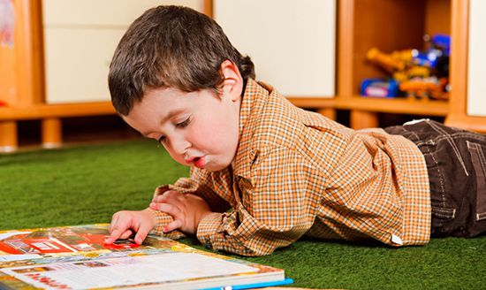

2016年9月7日又是一年开学季，幼儿园入学要注意哪些问题？

物质准备
提前预备开学用品，与孩子一同准备并告诉孩子这些用品的名称与作用。选择一些穿脱方便又不妨碍活动的衣服；软底鞋；准备一个孩子喜欢的小背包，放置孩子个人用品如小手巾、水壶等。
宝宝入园的注意事项
1、幼儿初次来园，因环境、人员的变化，会产生恐惧心理和种种不适应，这是正常现象，家长不必慌张，以免影响幼儿情绪。开学之前，最重要的是要做好入园前的心理准备和基本生活技能准备。初入园时孩子会因分离焦虑的不安心理，哭闹不止，每个孩子都有大约一周的适应期，希望家长信任老师，能够坚持送孩子入园。
2、告诉您的孩子幼儿园有许多小朋友，是和小朋友一起高高兴兴做游戏的地方。由于初次的集体生活，孩子会感到紧张和疲劳，甚至不安，请家长准时接孩子。
3、幼儿来园前，家长应根据幼儿的特点帮助幼儿作好心理准备，不要吓唬孩子，使孩子先产生恐惧心理。
4、生活要开始有规律性，早睡早起，保证孩子每天能够以愉快的心情来园。
5、提前和老师介绍您的孩子的日常生活习惯，有需要帮助的可以与老师商量解决。
6、来园之前，请帮助孩子养成独立做事的习惯，学习简单的生活技能。
7、当您离开时务必和幼儿告别，并温柔坚定的告诉他，放学时准备接他回家，让他有温暖、安全的感觉。
注意安全
爸爸妈妈们送宝宝入园，一定要做好安全工作。每天早晨，您最好都要确认宝宝已经安全进入幼儿园了，再离开。不要觉得您的宝宝聪明，或是年龄比其他宝宝大等一些原因，就把宝宝放在幼儿园门口，就自行离开了。这是很不安全的。您一定要确保每一天宝宝都进入教室了，再离开。以免宝宝在校门口到班级之间出现安全问题，这不仅会得不偿失，还会造成您与学校老师之间的误会。宝宝的安全问题，绝对不能轻视。
宝宝入园注意事项主要就是以上几点了，爸爸妈妈们一定要牢牢记在心里面，这样子才能够为宝宝建立一个美好的健康的幼儿园生活。不要为了您自己的一时方便，而出现一些不必要的问题哦！耐心、细心总是好的。
爱是教育的灵魂，只有融入了爱的教育才是真正的教育。以真诚拥抱每位学生，用爱心谱写动人乐章。